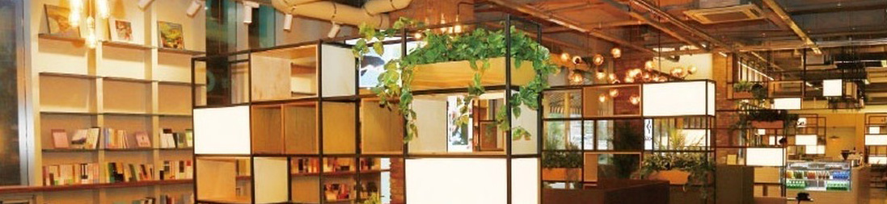

Introduce
블루스퀘어는 관객들에게 더 풍성한 즐거움을 제공합니다
Blue Square
welcomes all of your to visit.
인터파크씨어터는 공연 투자 및 티켓 유통 영역에서 공연 성장을 이끌어온 인터 파크가 미래의 공연 산업 발전에 기여하기 위해 설립한 공연장 운영 법인입니다. 인터파크씨어터는 뮤지컬과 콘서트 공연장으로 사랑받고 있는 블루스퀘어와 더불어 다양한 콘서트, 어린이 공연, 전시를 선보이고 있는 서울 합정동 신한카드 판스퀘어, 이화여대 삼성홀을 운영하고 있습니다. 뿐만 아니라 복합문화공간 플랫폼참동61 운영을 통해 문화 불모지에 가까웠던 서울 동북권에 활력을 불어넣는가 하면, 부산에서는 소향씨어터를 운영해 우리나라 공연계 균형 잡힌 발전에도 기여하고 있습니다.
서울 한남동에 자리한 블루스퀘어는 1,766석의 뮤지컬 전문 공연장인 인터파크홀 과 1,400석(스탠딩 2,800석) 규모의 다목적 공연장인 아이마켓홀로 구성된 국내 최대 규모의 공연장입니다(뮤지컬 전문 공연장 기준). 2011년 11월 개관 이후 1 년여 만에 100만 관객을 돌파한 블루스퀘어는 매년 국내 최고의 흥행작을 무대에 올려 연간 공연장 가동률 100%를 달성하고 있습니다. 이처럼 업계와 관객들의 뜨거운 성원 덕분에 블루스퀘어는 우리나라 최고의 흥행 공연장으로 굳건히 자리매김할 수 있었습니다.
블루스퀘어는 관객들에게 더 풍성한 즐거움을 제공합니다. 7만 5천여 권의 서적을 편안한 소파에서 마음 편히 읽을 수 있는 북파크, 탁 트인 남산 전망의 테라스가 이국적인 정취를 풍기는 카페 필로스가 블루스퀘어에 트렌디한 분위기를 더하고 있습니다. 이와 더불어 관객들의 달라진 공연 관란 패턴에 발빠르게 대처해 '혼공족' 들을 위한 오리엔탈 푸드 전문점 '솔로스키친'과 공연의 여운을 와인과 함께 곱씹을 수 있는 정통 레스토랑 '스테이지B'도 운영 중입니다. 이들 공간을 통해 블루스퀘어는 하루 종일 머물러도 지루할 틈이 없는 복합문화공간의 면모를 완성했습니다. 앞으로도 인터파크씨어터는 제작사에게는 작품의 퀄리티가 향상될 수 있는 최적의 제작 환경을, 관객 여러분께는 감동 가득한 공연과 쾌적한 관람 환경을 제공할 것을 약속드립니다. 복합문화공간 블루스퀘어를 비롯해 전국 각지의 공연장 운영을 통해 우리나라 공연계의 발전을 견인해 나가겠습니다.